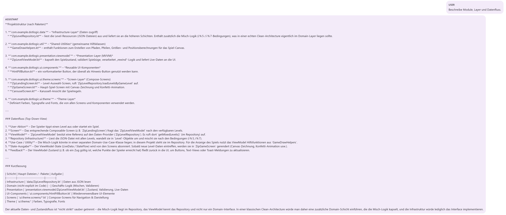

Overview
CodingAgent is a rebuilt architecture for context-aware assistance in code and system design tasks. It combines LLM capabilities with persistent context and structured tool interaction.
Problem
Traditional LLM assistants quickly lose context in larger projects. As a result, they struggle with architecture-level reasoning, long-running tasks, and consistent understanding across sessions.
Architecture Approach
Tool Mode / Knowledge Mode
The agent separates tool execution from semantic context usage, enabling more structured and predictable behavior.
Vector-Based Long-Term Memory
Project knowledge is stored semantically, allowing relevant information to be retrieved and reused over time.
Layered Architecture
UI, orchestration, LLM client, memory, and tooling are clearly separated to improve maintainability and extensibility.
Modular Tool System
New tools can be integrated in a structured way without increasing system complexity or coupling.
Key Features
The focus is on building an agent that remains useful over time by combining structured architecture with persistent semantic context.
UI & Agent Flow


Challenges
The main challenge was designing an agent that scales architecturally, not just functionally. Clear separation between prompting, memory, orchestration, and tooling was essential.
Learnings
Useful assistant systems require more than a strong model. Long-term value comes from combining context, architecture, and tooling into a coherent system.